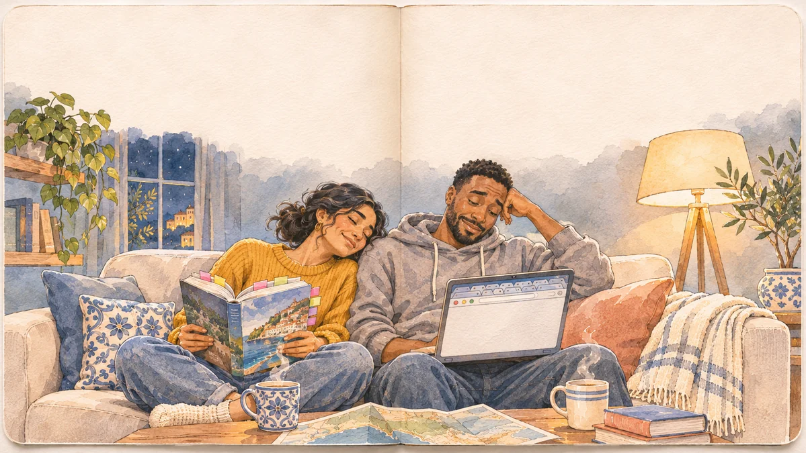
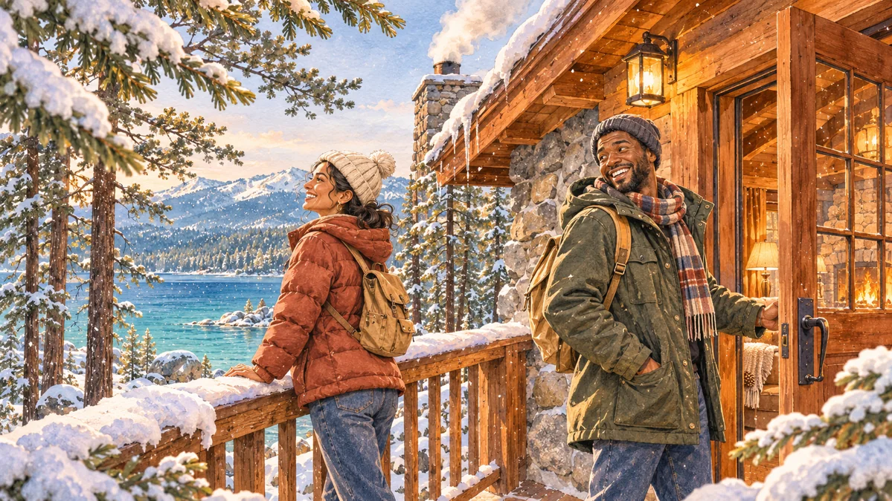
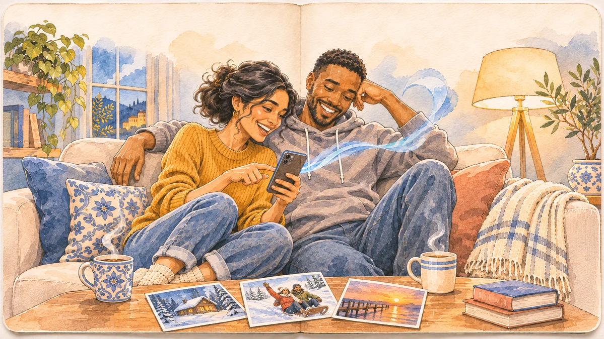
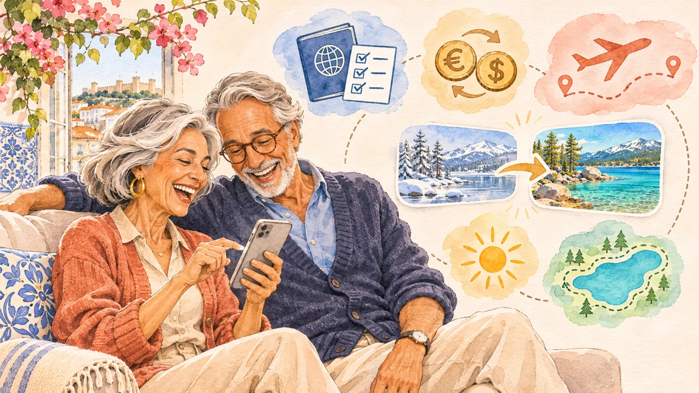
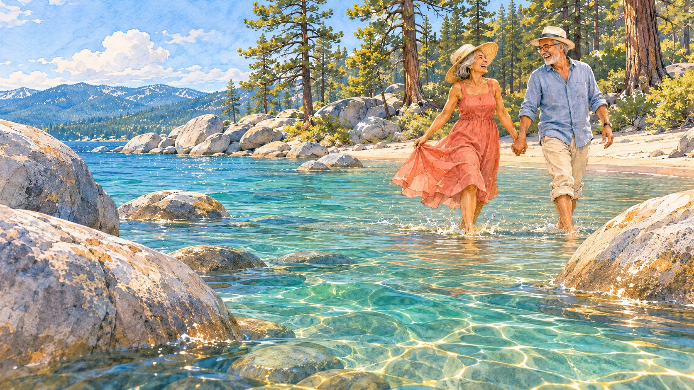

A little less homework. A lot more holiday.
You wanted
a trip.
You got
fourteen tabs.
A flight here. A hotel there. Weather, maps, trails… somewhere else.
Booking one thing is easy. Seeing how it all fits together is the hard part.
There’s a better way @ICON(arrow-right)@
01 / See the whole picture
A ticket is only
part of the trip.
Put the decisions beside each other. The journey, the stay, the budget—and what it’s actually like when you get there.
Choose with the context you need. Then reserve on the partner’s site.
Less “did we miss something?”More “let’s go.”
@ICON(ext)@ Booking happens with the partner. Your plan stays here.
02 / Before you go. While you’re there.
Booked is just
the beginning.
Shape the days together. Keep your bookings, directions and family notes in the same place.
And when the day changes? So can the plan. You’re on holiday, after all.
Room for a slower morning.
A day by the lake.
The important things in place. A little room between.
A shared plan. Easy to change.
03 / The bit you came for
And then…
just be here.
The plan can take a back seat for a while.
04 / Home again
Most trips end
in a camera roll.
But you brought back something useful, too.
The route that worked. The stops you loved. The plan you already made.
What if someone elsecould start from here?

06 / Half a world away
Your good trip.
Their head start.
In Lisbon, Rosa and Tomás find your trail. A real trip to begin with, instead of a blank page.
They keep the useful parts. Change the season. Make the pace their own.
“Someone’s alreadyfigured this out for us.”

@ICON(heart)@ A little thank-you for the traveller who shared it.

A different season. A familiar trail.
Their summer.
Your little nudge.
A trip you loved helped this one happen.
07 / And it keeps going
Every trip makes
the next one better.
Travellers, bloggers and creators add what only they know.
A weekend journal. A favourite local walk. A place worth the detour. Firsthand experience becomes a trip someone can actually use.
Bring your travel story @ICON(arrow-right)@
A better way to travel, built together.
Take a trip.
Leave a trail.
See the whole picture. Make it yours.
Pass a little of it on.